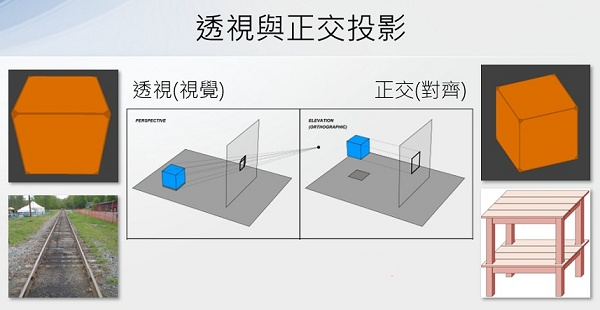
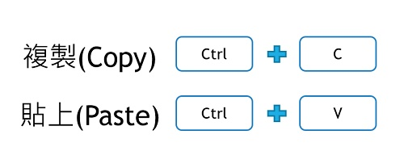

❤️ 3D - 魔術方塊
🔹 認識魔術方塊
魯比克·厄爾諾是匈牙利的建築學和雕塑學教授，為了幫助學生們認識空間立方體的組成和結構，所以他自己動手做出了第一個魔術方塊的雛形來，其靈感是來自於多瑙河中的沙礫。
1974年，魯比克教授發明了第一個魔術方塊，1980年Ideal Toys公司於販售此玩具，並將名稱改為Rubik's Cube。
-

-
(資料來源:1)
一起來做出魔術方塊的3D模型吧
🔸 新增立方體
- 點選primitvie(基本物體)，新增一個立方體

🔹 倒角與圓角
- 觀察電腦桌的邊緣及角，摸起來的感覺怎麼樣？會不會讓人割傷？
-
如何將砧板的角，削成圓角？
-
( 資料來源:2)
-
想想看，影片中圓角大小與紅色圓形蓋子的尺寸，與有什麼關係？
-
倒角及圓角是使物體的銳利稜角或邊緣，變得和緩的常見加工技術。
-

-
練習將立方體的邊，削圓角或倒角
-
點選立方體，再點選邊，按下齒輪圖示，選圓角或倒角
-

🔸 立方體削圓角
- 立方體有幾個面？幾個邊？
- 將立方體的12個邊都削成圓角(建議圓角半徑2)
- 並決定魔術方塊的底色(常見底色有黑、藍、白)
🔹 投影與三視圖
- 當3D空間的模擬物體，投影至2D畫面時(如觀看者的螢幕)，可以分成透視與正交投影2種方式：
-

-
(資料來源:3)
- 123D Design的視角改變操作如下
-

- 在工程製圖中常把物體在某個投影面上的正投影稱為視圖。常見的三視圖為前視圖、俯視圖、側視圖，是一種在平面製圖中，呈現立體物件的方法。
-

-
(資料來源:4)
🔸 複製魔術方塊
- 複製與貼上需利用鍵盤熱鍵操作
-

- 分別使用前視、俯視、側視的視角，再加上複製與貼上的工具，即可準確的完成魔術方塊的基本形狀。
🔹 魔術方塊配色
- 常見的魔術方塊為3x3x3(長寬高)，官方配色有6色，並有固定排列
-

-
(資料來源:1)
上圖為魔術方塊6面的展開圖，想一想，共有哪6種顏色？哪些白色的對面是什麼顏色？
🔸 紙張的厚度
- 你知道一張紙對折幾次就能抵達月球？！請看看下面的影片
-
( 資料來源:5)
- 看起來薄薄的一張紙，它的厚度是多少mm呢？
-

-
( 資料來源:5)
🔹 貼紙模型的製作
在上面的範例中，原本的方塊尺寸為 20mm x 20mm x 20mm ，削圓角的半徑為2mm，這樣可以知道貼紙的精確尺寸嗎？

- 將貼紙產生，並換好顏色後，再利用以下的磁鐵功能，將貼紙貼在方塊上。
接下來，請完成魔術方塊的3D模型。
🔸 classroom作業
一、請上傳「魔術方塊」作業(新增 -> 檔案 -> 選x裡面的魔術方塊作業)。
二、請上網找出魔術方塊的歷史，將資料整理後回答。
答：
三、請上網找出三種不同魔術方塊的圖片。
圖片一：
圖片二：
圖片三：
四、請寫出在「魔術方塊」單元中，印象最深刻的學習內容？為什麼印象深刻？
答：